Mission log · day one
Pale Blue Pebble
You set down on a rock barely wider than your shadow. In the hold: seeds and dirty ice. Walk it, plant it, thaw it, and see if it will hold an atmosphere before your air runs thin.
In development · iPhone and iPad
Left thumb walks · right thumb looks
The mission
One cat. One lander. A pebble that gets bigger every time you tend it.
Put a seedling in the ground
The pack has seeds and the ground is waiting. Once a tree takes, it drops pods of its own, and the grove starts spreading without you.
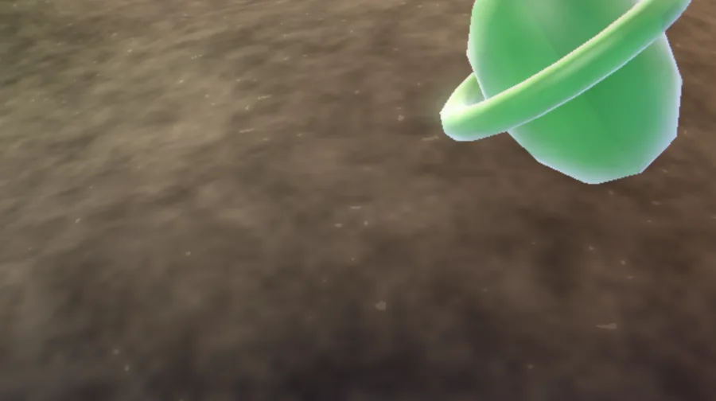
Dig a hollow, thaw the ice
Roots are thirsty things. Dig a bowl, melt dirty ice into it, and a puddle becomes a pool becomes a lake.
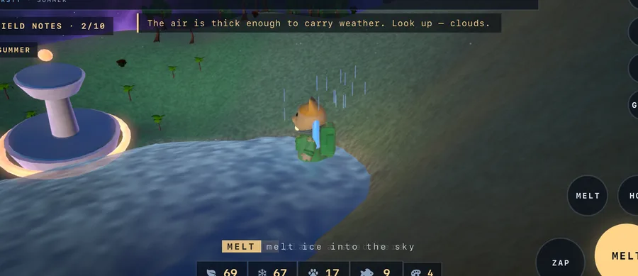
Guard what you grew
Something is always chewing at the roots. Borers freeze solid when zapped. Critters that raid the pods leave a pelt behind.
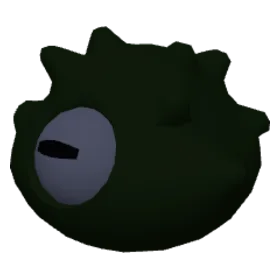
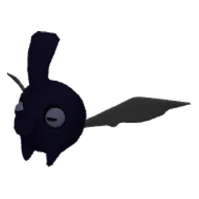
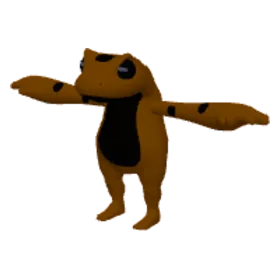
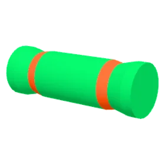
Raise a camp from the lander
A beacon against the dark. A tent by the grove. A condenser, a habitat, a radio tower. Then send a signal and see what answers.
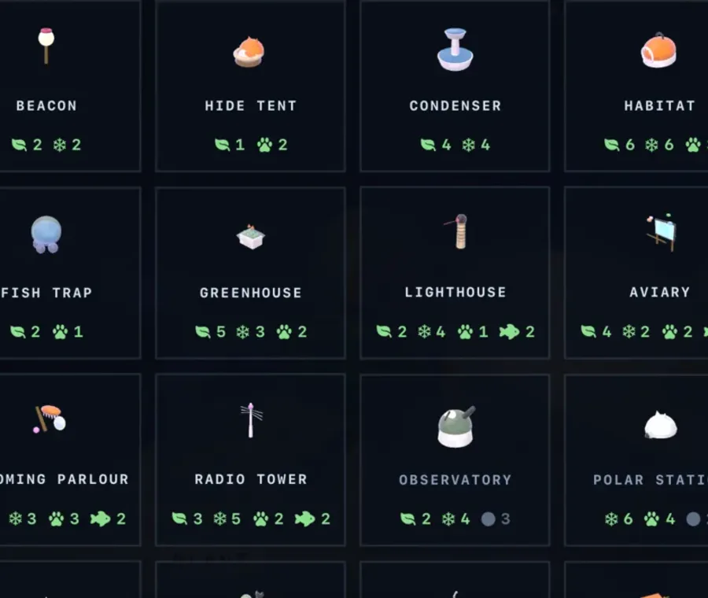
Mission log · growth
Small world
The horizon is farther than it was. Your boots are the same size.
Water, flora and air belong to the Pebble. The fourth gauge is the cat's own. It drains as she walks about and a nap refills it. A drowsy cat drags her paws, and that is the whole penalty. Nothing out here kills you.
It grows
Every living tree makes the world bigger. Keep the gauges fed and the helmet comes off.
Growth is continuous. Every tree, every melted block, every standing building and every fed crewmate adds to what the Pebble wants to be. Each time it crosses a line, everything stops for a card and the camera climbs from the cat's shoulder out to orbit and back. Then the gauges fall, because a bigger body asks for more.
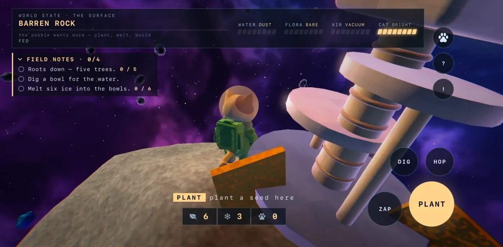
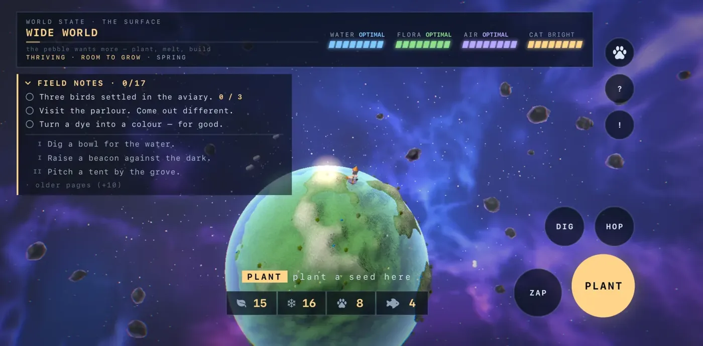
- Small world
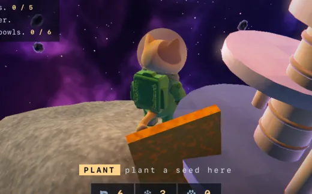
The horizon is farther than it was. Your boots are the same size.
Meteors begin - Young planet
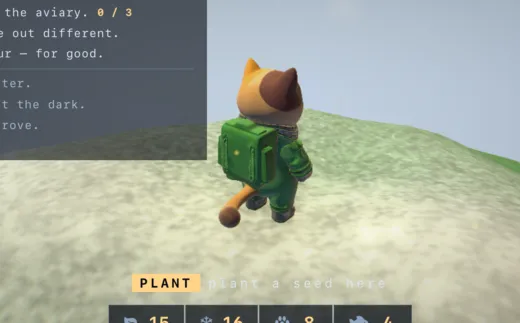
Weather has seasons now. Somewhere it is raining on nobody.
Seasons arrive, and so does the decline - Home
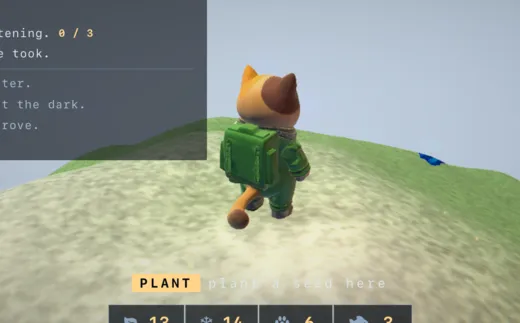
You stopped counting trees. The rock you landed on is a planet with a name, and the name is yours.
Lighthouse, radio tower, the rover - Wide world
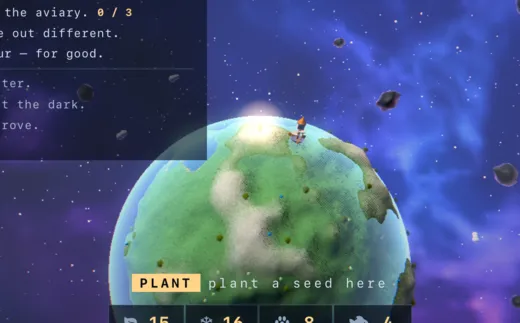
The lander is a speck from the far ridge. You could walk for a day and not come back round.
Aviary, grooming parlour - Blue Pebble
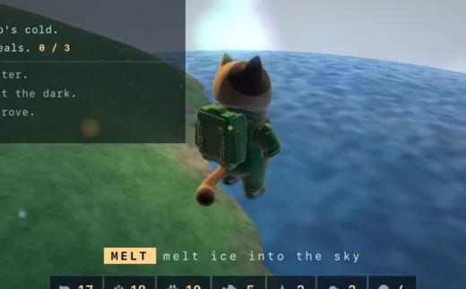
From orbit it would be blue now. Nobody is in orbit. That can change.
Ice caps, auroras, four polar animals, the parka - World
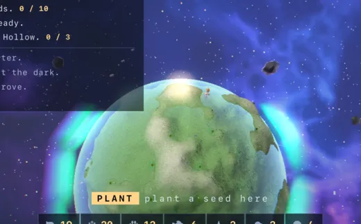
It has a horizon. Things live past it that you have never met.
And it keeps going. The ladder never stops
Separately, the air thickens. Five stages gate the early buildings and the suit, and the quietest one is the best: at Living world the helmet comes off. Let the gauges slip and it goes back on.
The seasons
Twenty minutes to a year. What you plant takes the season's shape, and each season breaks something different.
Spring
Blossom, at any height. The ice lets go and the polar animals head home. Paws are quicker in the warm, and once in a while a blossom drops a dye instead of a pod.
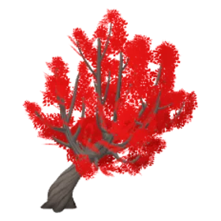
Summer
Birch up high, broadleaf in the middle, palms on the shore. The pools shrink three times as fast. Sunblooms sow themselves beside the grove: nobody planted them, everybody looks at them, and they drink like three trees each.
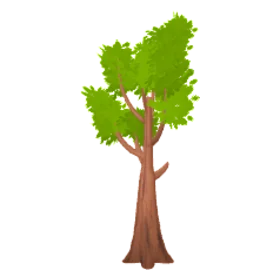
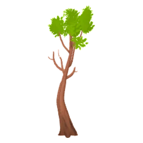
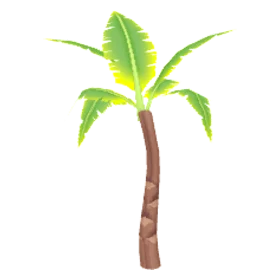
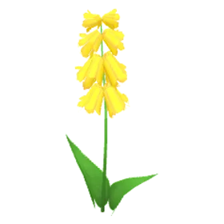
Autumn
Maple up high, oak below. One pod in four turns into something else. Half of all autumns bring a storm: ten seconds of rain, then the flood, then a rainbow for exactly as long as it takes to look at it.
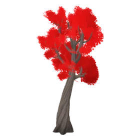
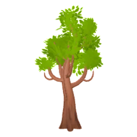
Winter
Pine and evergreen. Snow settles from the peaks down until every pool freezes over. Walk on the ice, or skate it. The cold takes the oldest ordinary tree now and then. The polar animals come down off the caps, carrying double.
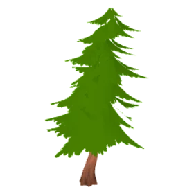
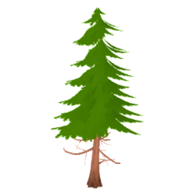
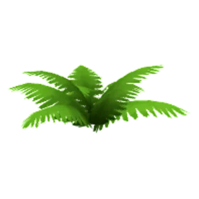
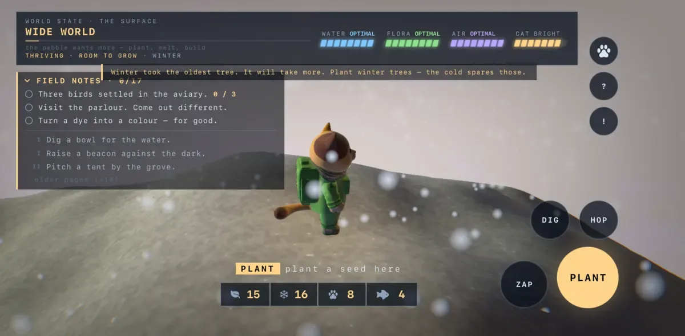
The Pebble pushes back. Water evaporates: a full gauge drains in minutes if you melt nothing, faster in summer, not at all under winter ice. Meteors fall with four seconds of warning and take a tree, a pool, or a bite out of the air. Below a third of a gauge the trees wilt one at a time, the helmet goes back on, and the animals lie down and leave what they were carrying. Lose everything and mission control drops a resupply pod beside the lander. Nothing ends.
Against all that you carry a small kit: a rain flute that calls a shower down on a pool, sky balm for a torn atmosphere, storm pegs for a tree you love, flares that turn a meteor away. None of it makes anything safe. It pushes back, and the world carries on.
A look at it
Scroll sideways for more. Work in progress, so it will keep changing.
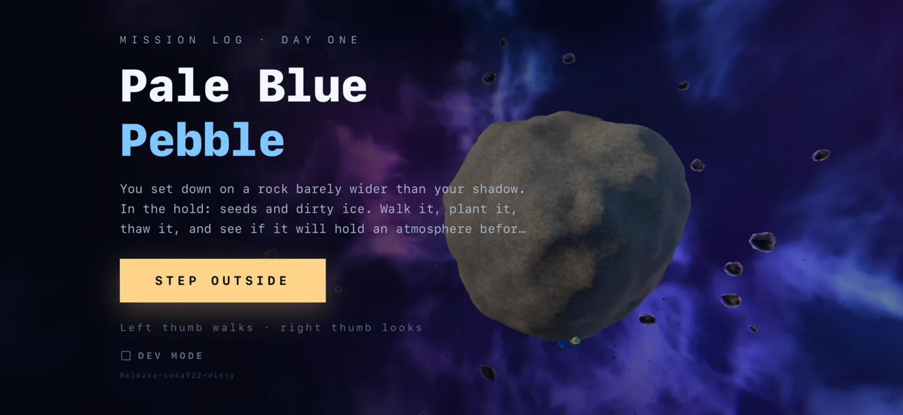
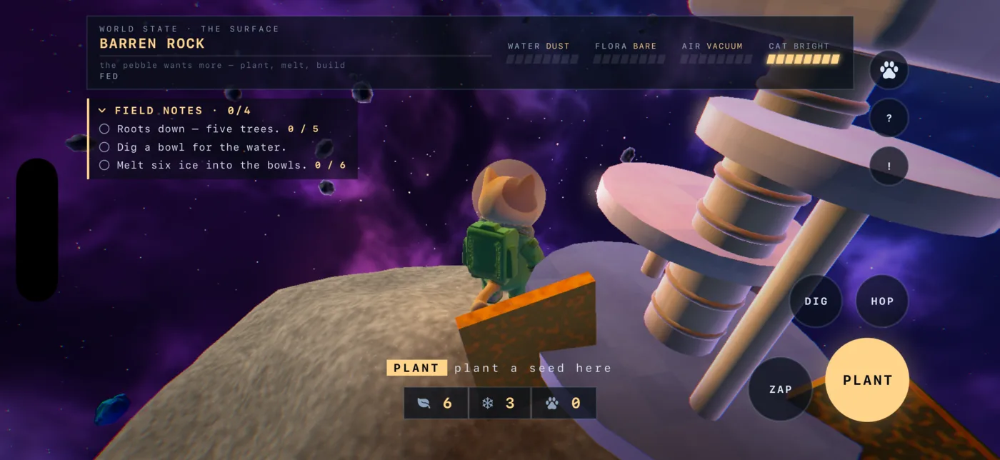
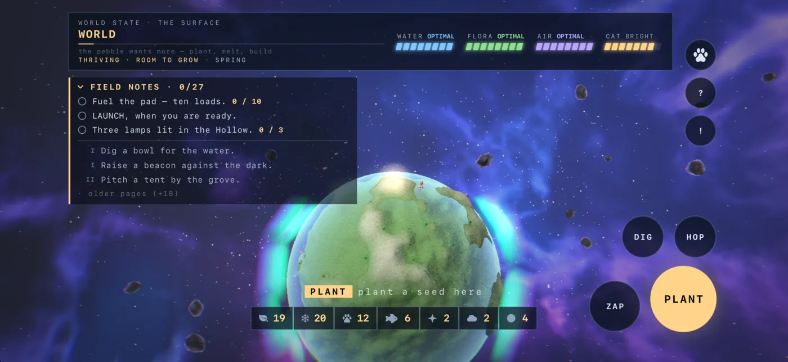
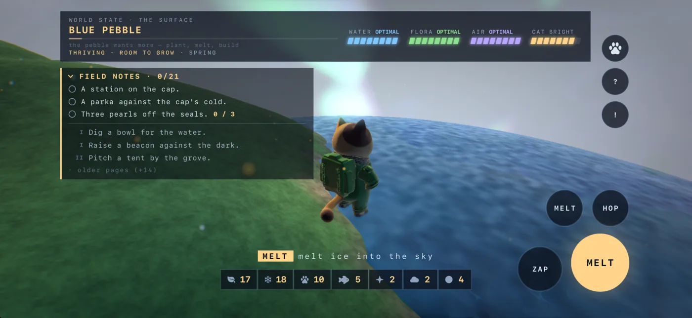
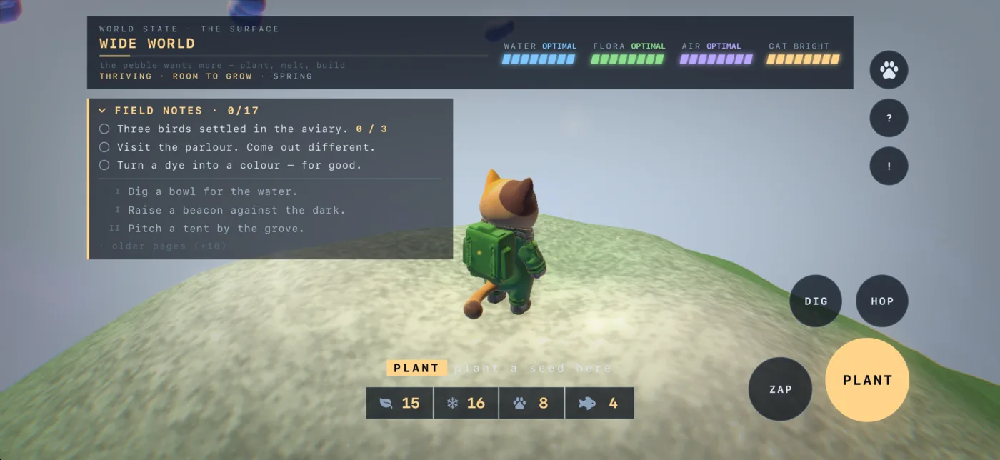
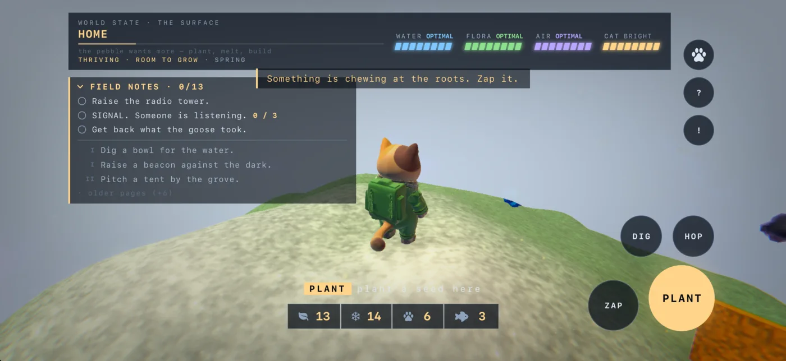
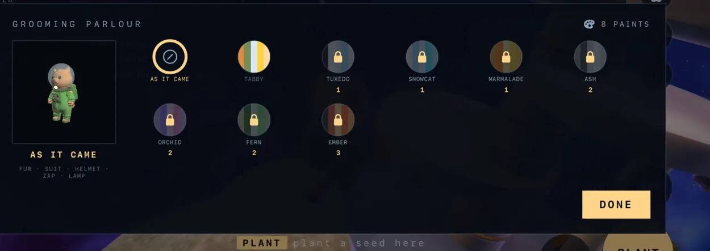
What's inside
- Built on licensed art we picked by hand, rendered in our own engine.
- Two thumbs. Left walks, right looks. Everything else is one of four big buttons.
- Landscape, on iPhone and iPad. Saves where you left it.
Field guide
One cat, the things she plants, and the things that come for them.
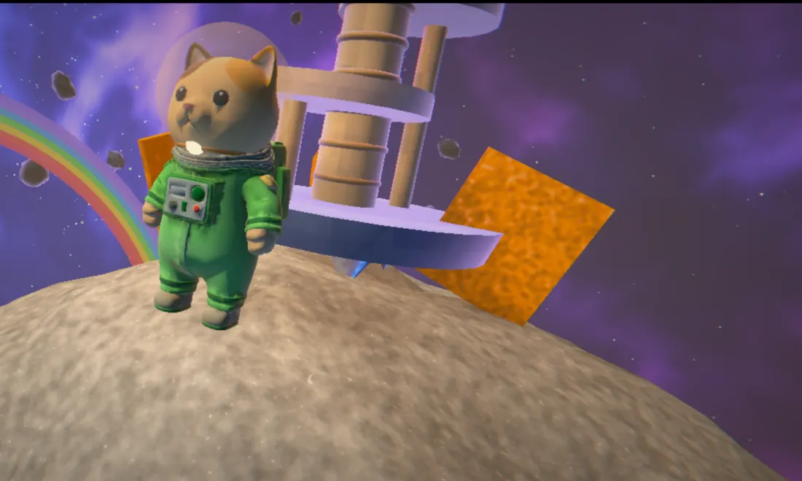
The cat and the goose are rigged characters. The plants, animals and pickups are licensed models we picked by hand and re-seated to the Pebble's scale, then rendered in our own engine. Everything else out there, the lander, the buildings, the sea, the sky, is ours.
What you plant
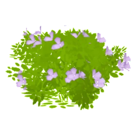
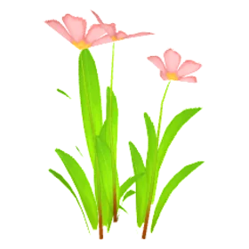
What comes for it
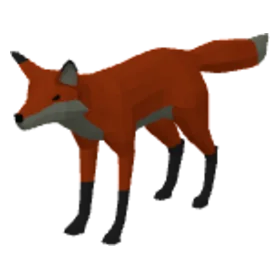
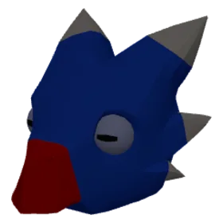
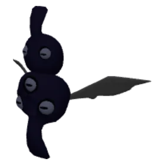
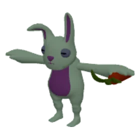
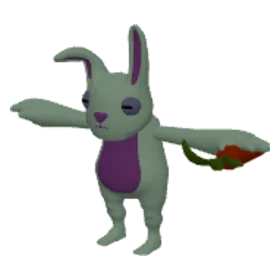
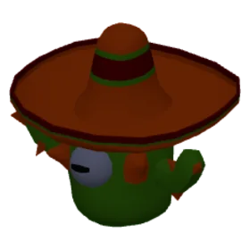
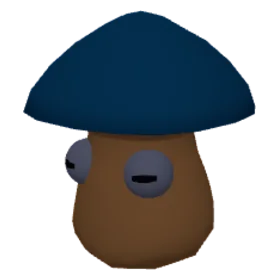
What you pick up
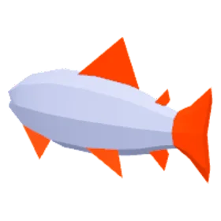
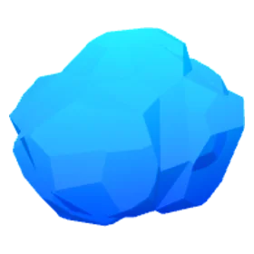
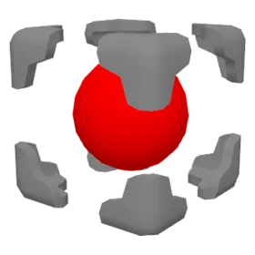
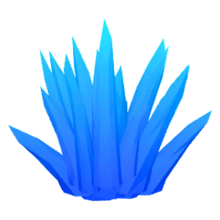
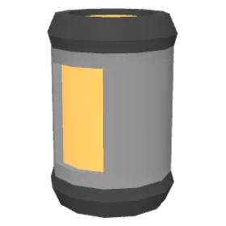
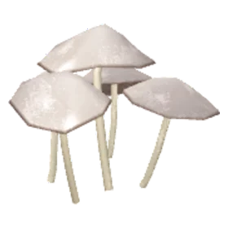
The crew
Raise the radio tower and send a signal. Things with opinions answer it.
Charges any critter that comes near your pods and runs it off. A mobile tent. Also walks away with the nearest thing on the ground about once a minute. Zap it and it gives the thing back. You silly goose, you!
A small tabby. Finds a stray seed pod and plants it, one a minute. Needs a fish a day, and she means it. Found one. Planting it. Do not watch me.
A grey long-hair. Carries ice to the nearest pool and pours it in. Hates the goose, and hisses at it from a safe distance. Needs a parka in the den or she sits the winter out.
A lanky white. Mends the nearest chewed tree and deals with any borer that gets close. Will not walk on ice. Needs a tent nearby or he wanders off. This tree has been chewed. I have opinions about borers.
They are peers, not pets. Once they arrive, part of the job is keeping a crew fed, and each fed crewmate counts toward the world's growth the same way a building does. Everything on the Pebble has a voice, too: the critters squeak, the borers burble, the penguins peep, the seals arf. One call each, so a crowd never becomes a chorus.
Building
Twenty-seven buildings, and every one of them is a cat object.
Blueprints are taken at the lander and carried to where they will stand. Nothing on the Pebble is a generic sci-fi prop. The beacon is a collar bell on a post. The tent is a wicker cat bed with an eared hood. The condenser is a drinking fountain, the habitat a cat carrier with a barred door, the fish trap a goldfish bowl on stones. The greenhouse grows cat grass. The lighthouse is a scratching post swinging a laser pointer. The aviary is Cat TV. The parlour is a giant brush with a mirror, the observatory a cat's-eye dome, the polar station an igloo cat house with ears. The launch pad wears a painted paw, the orchard keeps a scare-cat, and the windmill spins four striped tails.
Every building has a Mk II, and most have a Mk III. Two of them are shops: the sewing den for soft goods, the tinker shed for hardware. Hold a finger on anything for half a second and a card tells you what it is, what it drops, and how it is doing right now.
The wardrobe
Twenty-two things to wear or carry, and a salon that repaints the cat, the goose, and everything with wheels.
A board on your back. Cats do not swim. Cats surf.
Most of it shows on the cat. The parka is a real puffer with a cream collar. The skates turn a hop into a spin. The rover is a scrap-built buggy for a Pebble that has outgrown paws. And at the parlour, colours come as whole schemes, one pick for fur, suit, helmet and all: tabby for free, then tuxedo, snowcat, marmalade, ash, orchid, fern and ember, bought with dye and kept forever.
Privacy
Built the same way as our other games. Nothing goes anywhere.
Pale Blue Pebble is a single-player game that lives entirely on your device. No analytics, no crash reporting, no advertising, no third-party code. Your saved pebble stays on your phone. Read the studio privacy policy.
Until it lands
Two Barnisan games are out now. This one is on the bench, and chapter five is still being written.
The launch pad takes ten loads of fuel and then offers one button. Where the rocket goes is the part we are not telling you.

Governor: Free Republic
Real-time naval strategy. A charter, one frigate, and a sea full of pirates.
Get it on the App Store →
YapOff
A pass-the-phone party word game. Twenty words, thirty seconds, one judge.
Get it on the App Store →